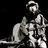
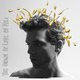

本周流行音乐人更多 »
本周热门单曲
最热
摇滚
民谣
流行
更多
-
18441次播放回音哥
-
8139次播放白天不亮
-
6833次播放
.jpg) 反光镜其他单曲
反光镜其他单曲 -
7212次播放左小祖咒
-
86427次播放宋冬野
-
20643次播放宋冬野
-
2748次播放戴佩妮/Penny
-
27777次播放末小皮
-
23753次播放高姗
-
3301次播放Mc.方仔aka.Royshine

热门乐评
流行
摇滚
电子
古典与爵士
- 新

- 隼 评论 《我是歌手第1季 第7期》
这期最突出的特点就是新，以前没听出来，但这次尚雯婕唱的确实不错，造型也特别好；羽泉的改编一如既往的有趣，大中国是我小时候特别喜欢哼哼的曲子；林志炫的《opera》无歌词空灵歌声让人沉浸其中；黄绮珊的《power of love》只唱...... (5回应)
- Karen English translation
- 
- 【Bryan】 评论 《The Origin of Love》
Karen Karen is twenty years old 凯伦二十岁了 Yes, but she has nothing but her age 她除了青春一无所有 And already time is slipping ......
- Pink在33岁高龄宣告自己艺术人格的成熟实属不易
- DLL@baidu 评论 《The Truth About Love》
评分：A 当Indie摇滚日益走入追求新颖的死胡同时， Pink（和Bruce Springsteen）的新专辑把我们带回了摇滚乐的经典时代， 即摇滚歌手凭借自己实力，演绎当下音乐潮流，并将其转化为个人风采的时代. Bruce......
> 更多乐评

最近热门的音乐活动更多 »
-
02月22日 ~ 04月19日 每周五 18:30-20:30
福田上步南路国企大厦（深圳乐器城）四楼北区441 大门音乐部落，地铁科...
23人关注